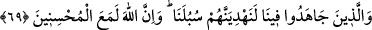

bize doğru geldiğini gördük. İhrama girmiş, insanları tanımak için yüzlerine bakıyordu;
nihayet yanımızda durdu. İbrâhim Havvas’a doğru eğildi, onun başını öptü. O da dedi
ki: “Ey Abdülmesih: Ne bu hâl?” Genç şöyle dedi: “Heyhât! Ben şimdi Mesîh’in de
kulu olduğu Allah’ın bir kuluyum.” İbrâhim Havvas: “Bana hikayeni anlat! dedi. O da
şunu anlattı: “Yerimde otururken bir hac kafilesi geldi. Ayağa kalktım, Müslümanların
kıyafetini yadırgıyordum. Bir de ne göreyim, sanki ihram giymişim ve gözüm de o anda
Ka’be’ye dalmıştı. Artık İslâm dini dışında bütün dinler gözümden silindi, yok oldu.
Müslüman oldum; gusledip ihrama girdim. İşte bugün seni arıyordum.” İbrâhim Havas
bana dönüp dedi ki: “Ey Hâmid! Hıristiyanlıkta sâdık olmanın bereketine bak! Onu nasıl
İslâm’a hidayet etti?”
Sonra o genç bizimle beraber oldu ve dervişler arasında vefat etti (Allah ona rahmet
eylesin!).
Fakîr (Bursevî) – Kâdir olan Allah onun hâlini düzeltsin – der ki: Bu hikâyede bir
takım işâretler vardır:
1. Ka’be haremine şirke bulaşmış bir müşrik giremediği gibi, kalp haremine de
iddiâya bulaşmış bir iddiâcı giremez.
2. Anlatılan bu Hıristiyan genç, sûret yolunda İbrâhim’e günlerce arkadaşlık yapmıştı.
Allah onun bu amelini zâyî etmedi; nihâyet bu beraberliği mânâ yoluna tahvil etti.
3. Bu gencin kendi yolundaki sadakâti, onu Allah’a îmâna sevk etti ve bâtılı red ve
inkâra götürdü.
4. Kimin bakışı sahih ise hak şâhidlerinden birini görünce, onunla Hakk’a istidlâl
eder ve rabbinin âyetlerini tekzîb etmez. Bu Nasrânî’nin Allah’ın zât sırrının sûreti olan
Ka’be’yi görmesi de böyledir. Yine Abdullâh b. Selâm Peygamberimiz (s.a.)’i görünce,
ona îman etmiş ve şöyle demişti: “Anladım ki, bu bir yalancı yüzü değildir.”
Allah’tan sıdk ve ihlâsın hakikatine ulaşmayı ve bu sahada ihtisas ehlinin ulaştığı
neticelerden istifâde etmeyi dileriz.
69. Ama bizim uğrumuzda cihad edenleri elbette kendi yollarımıza eriştireceğiz.
Hiç şüphe yok ki Allah iyi davrananlarla beraberdir.
“Ama bizim uğrumuzda” yâni bizim işimizde, bizim hakkımızda hâlisâne bir şekilde
bütün güçlerini harcayarak çalışıp “cihad edenleri…”
“Cihad” ve “mücâhede” düşmana karşı koymak için bütün gücü sarf etmek,
harcamaktır. “Mücâhede”nin mutlak olarak zikredilmesi; zâhirî ve bâtınî bütün
düşmanları içine alması içindir. Birincisi, harbeden kafirlerle cihad; ikincisi, nefis ve
şeytanla cihaddır. Denilmiştir ki: “Düşmanlarınızla cihâd ettiğiniz gibi nefis ve
hevânızla da cihâd edin.”